class: center, middle # Convolutional Neural Networks - Part II Charles Ollion - Olivier Grisel .affiliations[    ] --- # CNNs for computer Vision .center[ 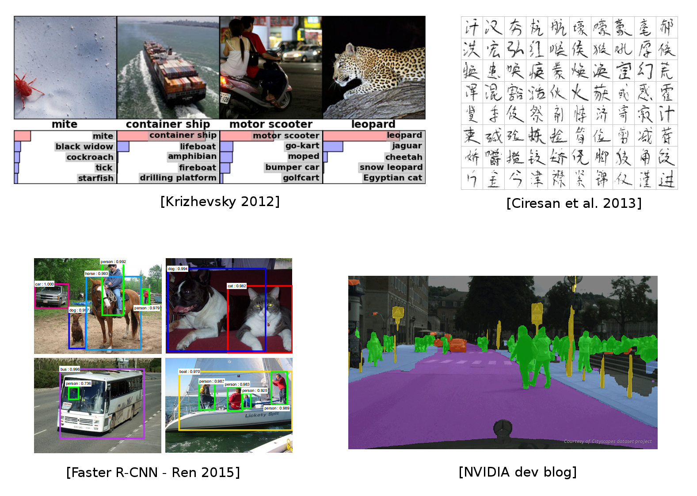 ] --- # Beyond Image Classification ### CNNs - Previous lecture: image classification -- ### Limitations - Mostly on centered images - Only a single object per image - Not enough for many real world vision tasks --- # Beyond Image Classification .center[ <br/> <img src="images/cls_1.png" style="width: 800px;" /> ] --- # Beyond Image Classification .center[ <br/> <img src="images/cls_2.png" style="width: 800px;" /> ] --- # Beyond Image Classification .center[ <br/> 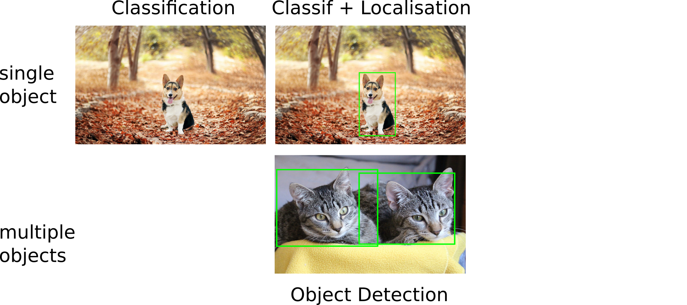 ] --- # Beyond Image Classification .center[ <br/> 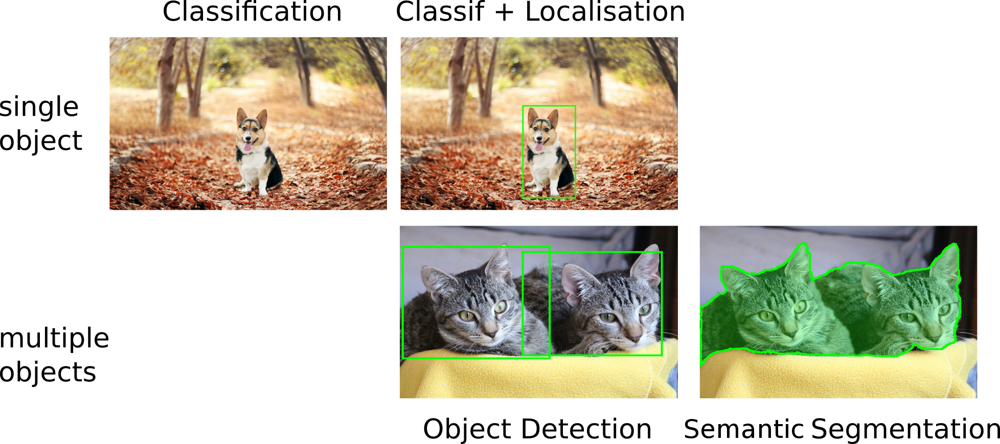 ] --- # Beyond Image Classification .center[ <br/> 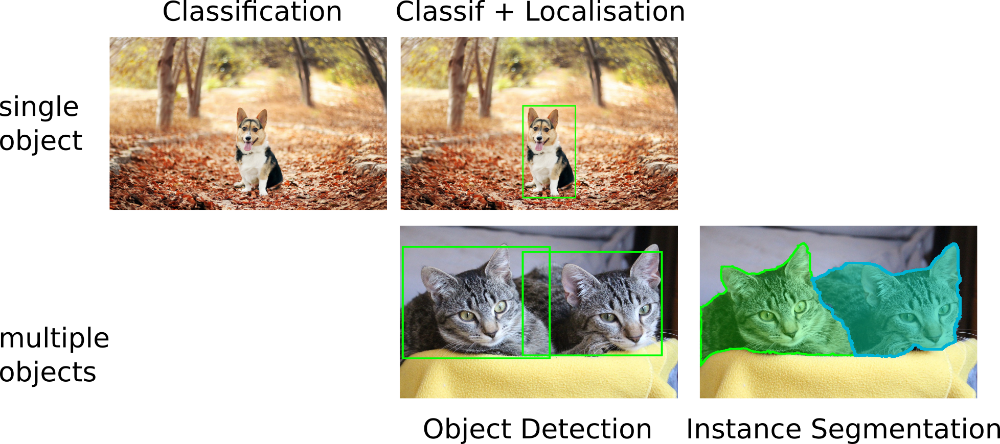 ] --- # Outline ### Simple Localisation as regression -- ### Detection Algorithms -- ### Fully convolutional Networks -- ### Semantic & Instance Segmentation --- class: middle, center # Localisation --- # Localisation .center[ 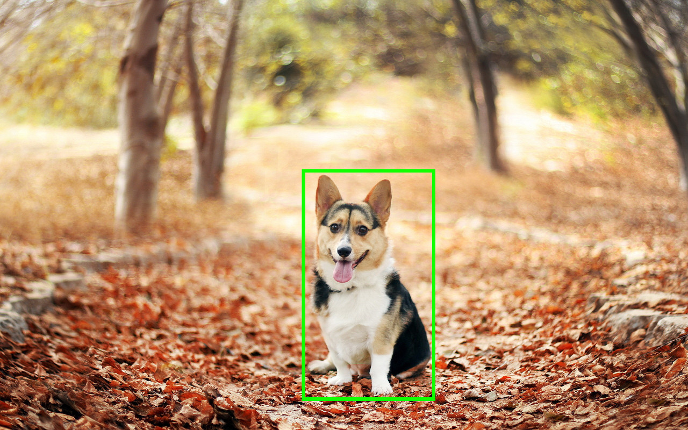 ] -- - Single object per image - Predict coordinates of a bounding box `(x, y, w, h)` -- - Evaluate via Interection over Union (IoU) --- # Localisation as regression .center[ <img src="images/regression_dog_1.svg" style="width: 700px;" /> ] --- # Localisation as regression .center[ <img src="images/regression_dog.svg" style="width: 700px;" /> ] --- # Classification + Localisation .center[ <img src="images/doublehead_1.svg" style="width: 600px;" /> ] --- # Classification + Localisation .center[ <img src="images/doublehead.svg" style="width: 600px;" /> ] -- - Use a pre-trained CNN on ImageNet (ex. ResNet) - The "localisation head" is trained seperately with regression -- - Possible end-to-end finetuning of both tasks -- - At test time, use both heads --- # Classification + Localisation .center[ <img src="images/doublehead.svg" style="width: 600px;" /> ] $C$ classes, $4$ output dimensions ($1$ box) -- **Predict exactly $N$ objects:** predict $(N \times 4)$ coordinates and $(N \times K)$ class scores --- #Object detection We don't know in advance the number of objects in the image. Object detection relies on *object proposal* and *object classification* **Object proposal:** find regions of interest (RoIs) in the image -- **Object classification:** classify the object in these regions -- ### Two main families: - Single-Stage: A grid in the image where each cell is a proposal (SSD, YOLO, RetinaNet) - Two-Stage: Region proposal then classification (Faster-RCNN) --- # YOLO .center[ <img src="images/yolo0.png" style="width: 500px;" /> ] .footnote.small[ Redmon, Joseph, et al. "You only look once: Unified, real-time object detection." CVPR (2016) ] -- For each cell of the $S \times S$ predict: - $B$ **boxes** and **confidence scores** $C$ ($5 \times B$ values) + **classes** $c$ --- # YOLO .center[ <img src="images/yolo1.png" style="width: 500px;" /> ] For each cell of the $S \times S$ predict: - $B$ **boxes** and **confidence scores** $C$ ($5 \times B$ values) + **classes** $c$ .footnote.small[ Redmon, Joseph, et al. "You only look once: Unified, real-time object detection." CVPR (2016) ] --- # YOLO .center[ <img src="images/yolo1.png" style="width: 500px;" /> ] Final detections: $C_j * prob(c) > \text{threshold}$ .footnote.small[ Redmon, Joseph, et al. "You only look once: Unified, real-time object detection." CVPR (2016) ] --- # YOLO .footnote.small[ Redmon, Joseph, et al. "You only look once: Unified, real-time object detection." CVPR (2016) ] - After ImageNet pretraining, the whole network is trained end-to-end -- - The loss is a weighted sum of different regressions .center[ <img src="images/yolo_loss.png" style="width: 400px;" /> ] --- # RetinaNet .center[ 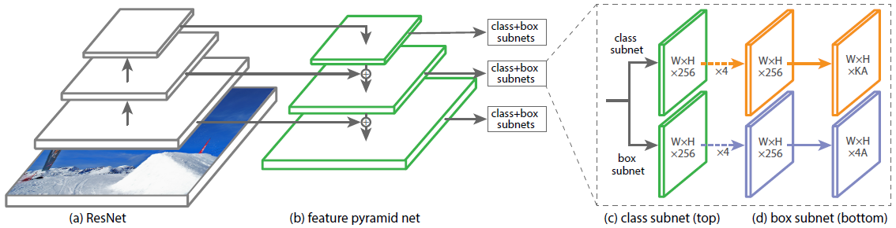 ] .footnote.small[ Lin, Tsung-Yi, et al. "Focal loss for dense object detection." ICCV 2017. ] -- Single stage detector with: - Multiple scales through a *Feature Pyramid Network* - Focal loss to manage imbalance between background and real objects -- See this [post](https://towardsdatascience.com/review-retinanet-focal-loss-object-detection-38fba6afabe4) for more information --- # Box Proposals Instead of having a predefined set of box proposals, find them on the image: - **Selective Search** - from pixels (not learnt) - **Faster - RCNN** - Region Proposal Network (RPN) -- **Crop-and-resize** operator (**RoI-Pooling**): - Input: convolutional map + $N$ regions of interest - Output: tensor of $N \times 7 \times 7 \times \text{depth}$ boxes - Allows to propagate gradient only on interesting regions, and efficient computation --- # Fast-RCNN .center[ <img src="images/fastRCNN.png" style="width: 650px;" /> ] .footnote.small[ Girshick, Ross, et al. "Fast r-cnn." ICCV 2015 ] -- - **Selective Search** + Crop-and-resize (RoI pooling) -- - Output: Softmax over $(K + 1)$ classes, and $4$ box offsets -- - Positive box are the ones with largest Intersection over Union **IoU** with ground truth ??? - 200 box proposals - gradient propagated only in positive boxes --- # Faster-RCNN .center[ 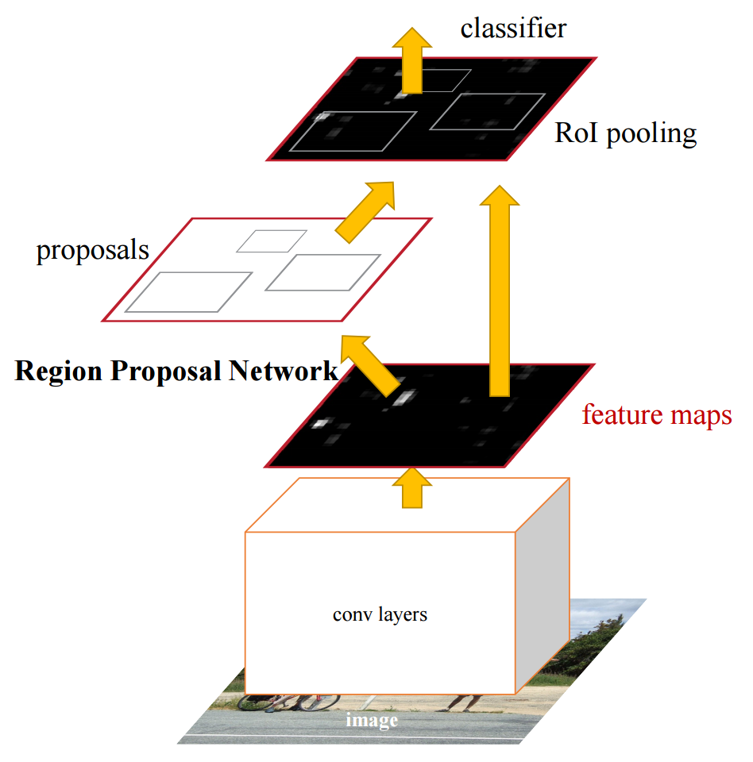 ] .footnote.small[ Ren, Shaoqing, et al. "Faster r-cnn: Towards real-time object detection with region proposal networks." NIPS 2015 ] -- - Replace **Selective Search** with **RPN**, train jointly -- - Region proposal is translation invariant, compared to YOLO ??? Region proposal input is a fully convolutional network: shares weights across spatial dimensions --- # Comparison of Detection Methods Measures: mean Average Precision **mAP** and Frames per Second **FPS** .center[ <img src="images/resultsyolo.png" style="width: 500px;" /> ] .footnote.small[ Redmon, Joseph, et al. "YOLO9000, Faster, Better, Stronger." 2017 ] --- ## State-of-the-art .center[ 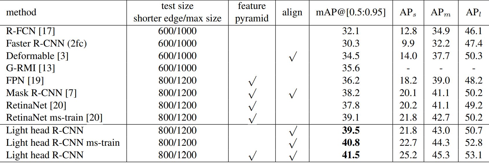 ] Measures: mean Average Precision **mAP** at given **IoU** thresholds .footnote.small[ Zeming Li et al. Light-Head R-CNN: In Defense of Two-Stage Object Detector 2017 ] -- - AP @0.5 for class "cat": average precision for the class, where $IoU(box^{pred}, box^{true}) > 0.5$ --- ## State-of-the-art - fast methods .center[ 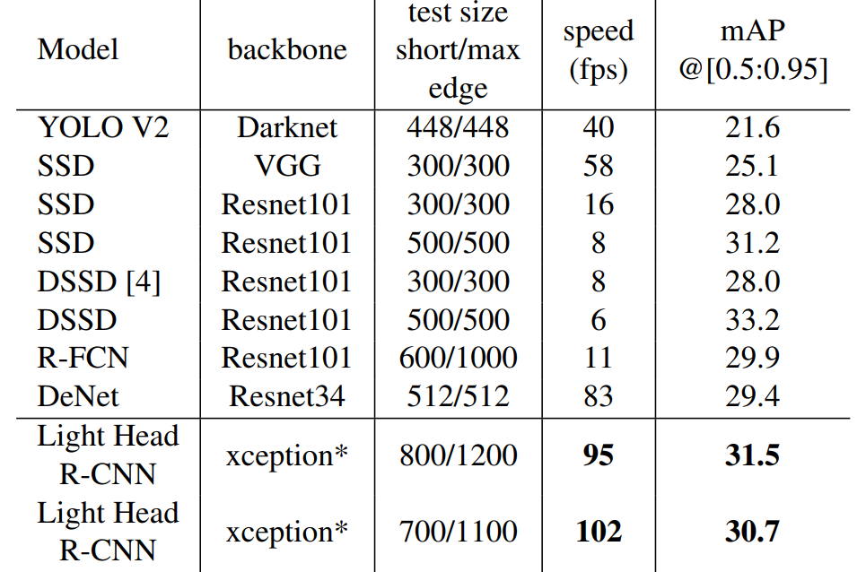 ] Measures: **mAP** and Frames per Second **FPS** .footnote.small[ Zeming Li et al. Light-Head R-CNN: In Defense of Two-Stage Object Detector 2017 ] -- - Mask RCNN, light-head R-CNN for best accuracy - Yolo, SSD, Light-Head R-CNN for fast inference --- ## State-of-the-art .center[ ] -- - Mask RCNN, light-head R-CNN for best accuracy - Yolo, SSD, Light-Head R-CNN for fast inference --- ## Future works - New approaches try to avoid using anchors - CornerNet only predicts the two extreme edges of a box: .center[ 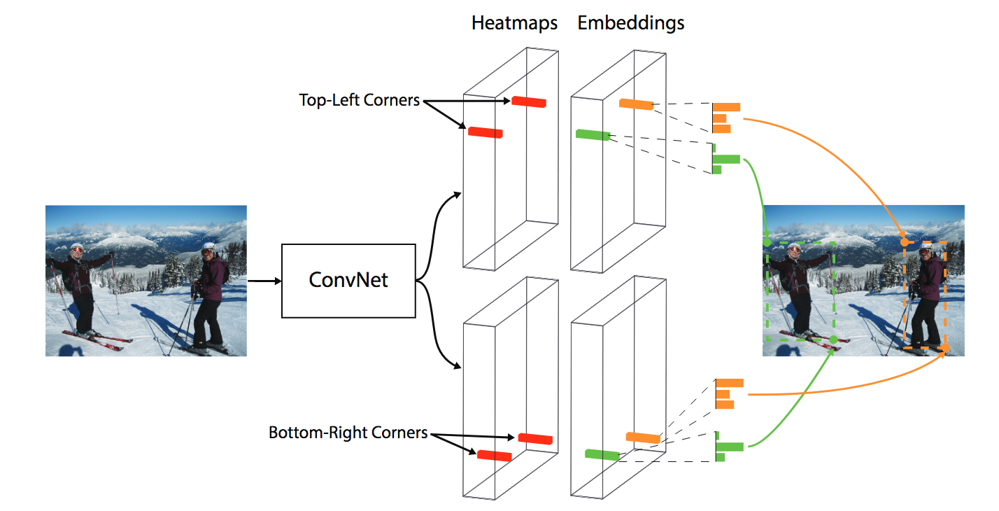 ] .footnote.small[ Law, Hei, and Deng, Jia. "CornerNet: Detecting Objects as Paired Keypoints" ECCV 2018 ] --- class: middle, center # Segmentation --- # Segmentation Output a class map for each pixel (here: dog vs background) .center[ 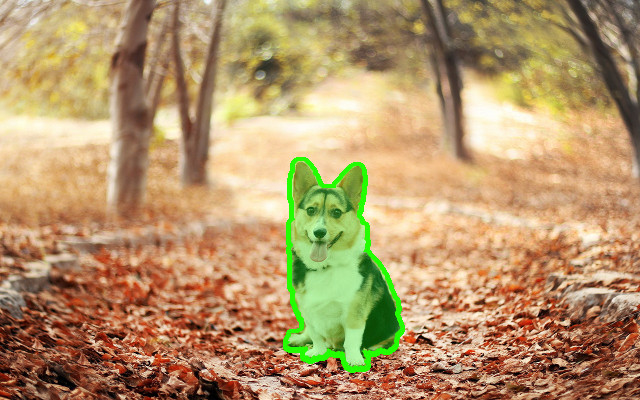 ] -- - **Instance segmentation**: specify each object instance as well (two dogs have different instances) -- - This can be done through **object detection** + **segmentation** --- # Convolutionize .center[ 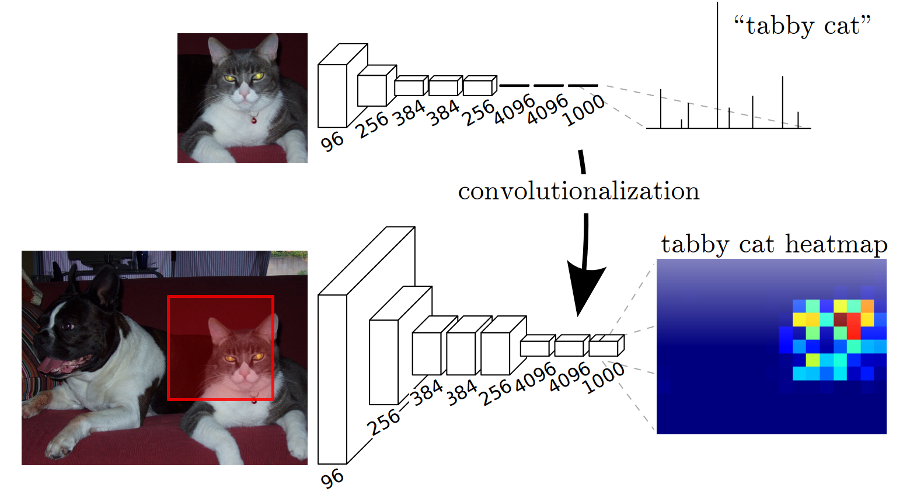 ] .footnote.small[ Long, Jonathan, et al. "Fully convolutional networks for semantic segmentation." CVPR 2015 ] - Slide the network with an input of `(224, 224)` over a larger image. Output of varying spatial size -- - **Convolutionize**: change Dense `(4096, 1000)` to $1 \times 1$ Convolution, with `4096, 1000` input and output channels -- - Gives a coarse **segmentation** (no extra supervision) ??? output map upscaled from fully convolutional network --- # Fully Convolutional Network .center[ <img src="images/densefc.png" style="width: 500px;" /> ] .footnote.small[ Long, Jonathan, et al. "Fully convolutional networks for semantic segmentation." CVPR 2015 ] -- - Predict / backpropagate for every output pixel -- - Aggregate maps from several convolutions at different scales for more robust results --- # Deconvolution .center[ <img src="images/deconv.png" style="width: 650px;" /> ] .footnote.small[ Noh, Hyeonwoo, et al. "Learning deconvolution network for semantic segmentation." ICCV 2015 ] -- - "Deconvolution": transposed convolutions .center[ 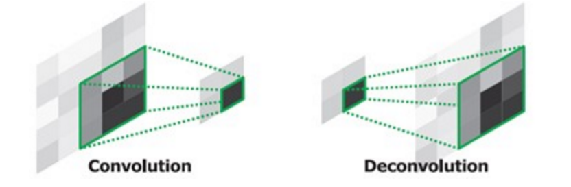 ] --- # Deconvolution .center[ <img src="images/deconv.png" style="width: 650px;" /> ] .footnote.small[ Noh, Hyeonwoo, et al. "Learning deconvolution network for semantic segmentation." ICCV 2015 ] - **skip connections** between corresponding convolution and deconvolution layers -- - **sharper masks** by using precise spatial information (early layers) - **better object detection** by using semantic information (late layers) ??? Unpooling: switch variables tied to corresponding pooling layers. Remembers which pixel was the max --- # Hourglass network .center[ 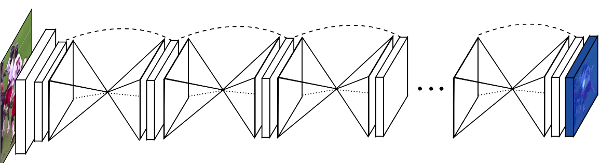 ] .footnote.small[ Newell, Alejandro, et al. "Stacked Hourglass Networks for Human Pose Estimation." ECCV 2016 ] -- - U-Net like architectures repeated sequentially -- - Each block refines the segmentation for the following - Each block has a segmentation loss --- ## Mask-RCNN .center[ 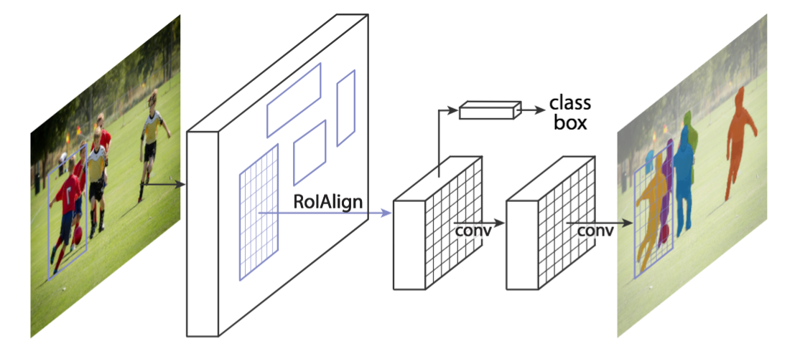 ] .footnote.small[ K. He and al. Mask Region-based Convolutional Network (Mask R-CNN) NIPS 2017 ] -- Faster-RCNN architecture with a third, binary mask head --- # Results .center[ 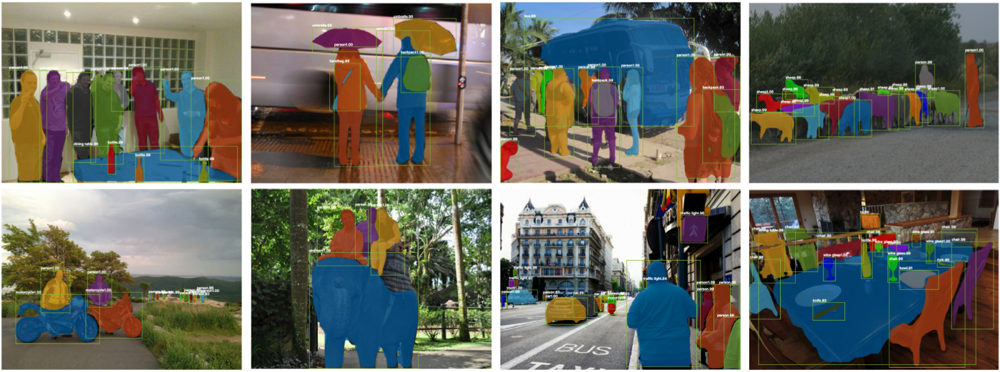 ] .footnote.small[ K. He and al. Mask Region-based Convolutional Network (Mask R-CNN) NIPS 2017 ] -- - Mask results are still coarse (low mask resolution) - Excellent instance generalization --- ## Results .center[ 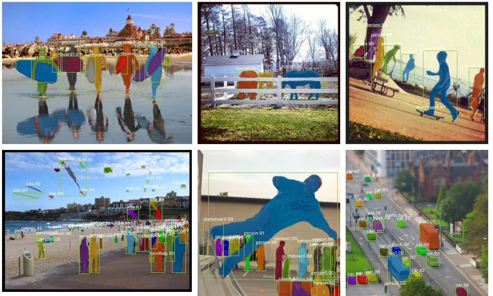 ] .footnote.small[ He, Kaiming, et al. "Mask r-cnn." Internal Conference on Computer Vision (ICCV), 2017. ] --- ## State-of-the-art & links Detectron https://github.com/facebookresearch/Detectron - Mask-RCNN and other architectures - Focal loss, Feature Pyramid Networks, etc. - Retina Net -- Megvii (Face++) - MegDet, similar architecture as Mask-RCNN .footnote.small[ Peng, Chao, et al. "MegDet: A Large Mini-Batch Object Detector." arXiv preprint arXiv:1711.07240 (2017). ] --- ## Take away NN for Vision ### Pre-trained features as a basis - ImageNet: centered objects, very broad image domain - 1M+ labels and many different classes resulting in very **general** and **disentangling** representations - Better Networks (i.e. ResNet vs VGG) have **a huge impact** -- ### Fine tuning - Add new layers on top of convolutional or dense layer of CNNs - **Fine tune** the whole architecture end-to-end - Make use of a smaller dataset but with richer labels (bounding boxes, masks...) --- class: middle, center # Lab 5: back here in 15 min!